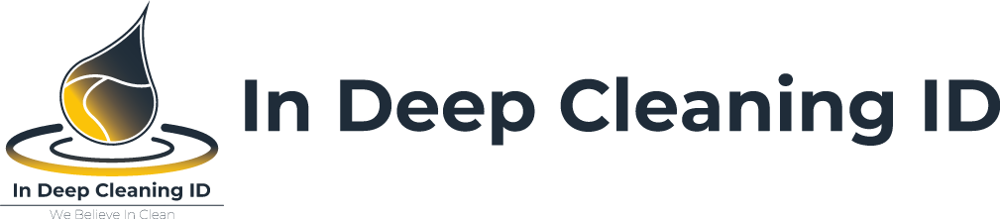

404
Halaman Tidak Ditemukan
Alamat yang Anda buka tidak tersedia atau sudah dipindahkan. Silakan kembali ke halaman utama untuk melihat layanan dan cara booking InDeep Cleaning ID.

404
Alamat yang Anda buka tidak tersedia atau sudah dipindahkan. Silakan kembali ke halaman utama untuk melihat layanan dan cara booking InDeep Cleaning ID.